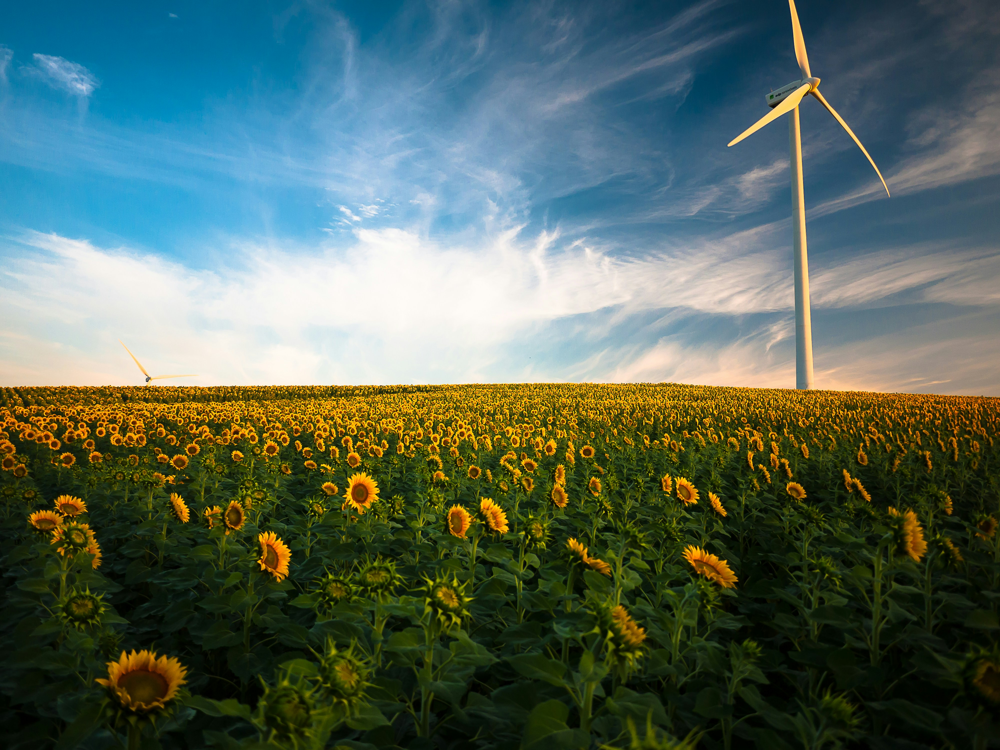
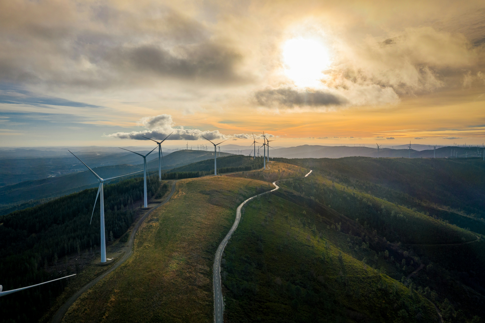
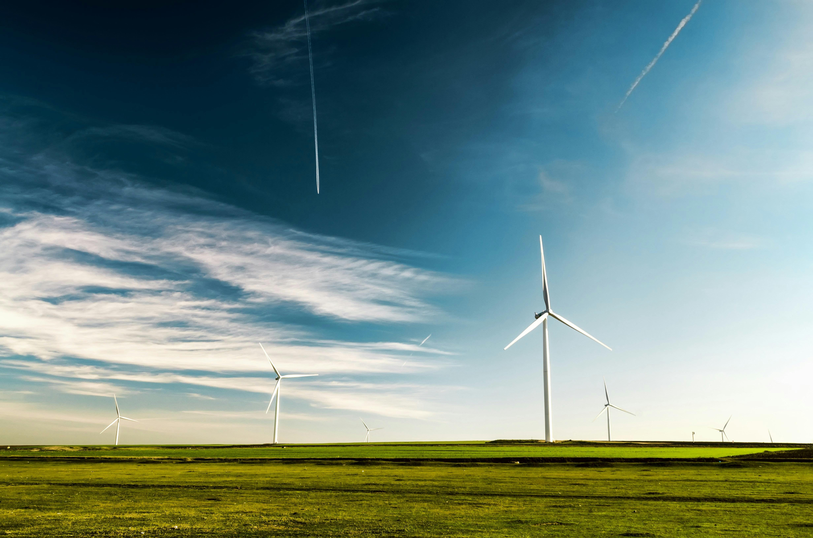

Energy: Powering Our Future

Wind energy has emerged as a leading force in the transition towards renewable energy sources. These majestic wind turbines, often seen dotting landscapes like silent giants, harness the power of the wind to generate clean and sustainable electricity. This page delves into the world of wind energy, exploring its technology, benefits, considerations, and exciting future potential.
How Does Wind Energy Work?

The concept behind wind energy is quite simple. Wind turbines are essentially modern-day windmills with a sophisticated twist. Here's a breakdown of the process:
1. Wind Movement: Wind, generated by the unequal heating of the Earth's surface by the sun, blows across the blades of a wind turbine.
2. Kinetic Energy Conversion: The wind exerts force on the blades, causing them to rotate. This rotation creates kinetic energy.
3. Shaft Rotation: The rotating blades are connected to a shaft that spins a generator.
4. Electricity Generation: The spinning generator converts the kinetic energy of the shaft rotation into electricity through electromagnetic induction.
5. Power Distribution: The generated electricity travels through a network of cables to transformers, ultimately reaching homes and businesses.
Wind farms, consisting of multiple wind turbines strategically placed in areas with consistent wind resources, can generate significant amounts of electricity to power entire communities.
The Advantages of Wind Energy

Wind energy offers a compelling solution to our energy needs with its numerous advantages:
• Clean and Renewable: Unlike fossil fuels that release harmful emissions, wind energy produces electricity without any greenhouse gases or air pollution.
• Abundant Resource: Wind is a constantly replenished natural resource, readily available in many locations across the globe.
• Cost-Effective: With advancements in technology, wind energy has become increasingly cost-competitive with traditional energy sources.
• Land-Use Efficiency: Wind farms utilize open spaces, often on agricultural land, minimizing their impact on densely populated areas.
• Job Creation: The wind energy industry fosters job opportunities in manufacturing, installation, operation, and maintenance.
Considerations for Wind Energy

While wind energy offers a bright future, there are some factors to consider:
• Visual Impact: Wind turbines can be visually disruptive in some landscapes. Careful siting and community involvement are essential.
• Variable Resource: Wind speed is not always consistent, requiring backup power sources or energy storage solutions for uninterrupted electricity supply.
• Wildlife Impact: Careful planning and mitigation strategies are needed to minimize any impact on bird migration patterns and other wildlife
The Future of Wind Energy

Wind energy is a rapidly growing renewable energy source. Here's a glimpse into what the future holds:
• Larger Turbines: Research and development are ongoing to create larger and more efficient wind turbines, allowing for increased electricity generation.
• Offshore Wind Farms: Offshore wind farms situated in deeper waters with stronger winds offer significant potential for future development.
• Energy Storage Solutions: Advancements in battery storage technology will enable more efficient capture and management of wind energy, overcoming the challenge of intermittency.
By addressing the existing considerations and advancing technology, wind energy has the potential to become a dominant force in the global energy mix, powering a sustainable future for generations to come.